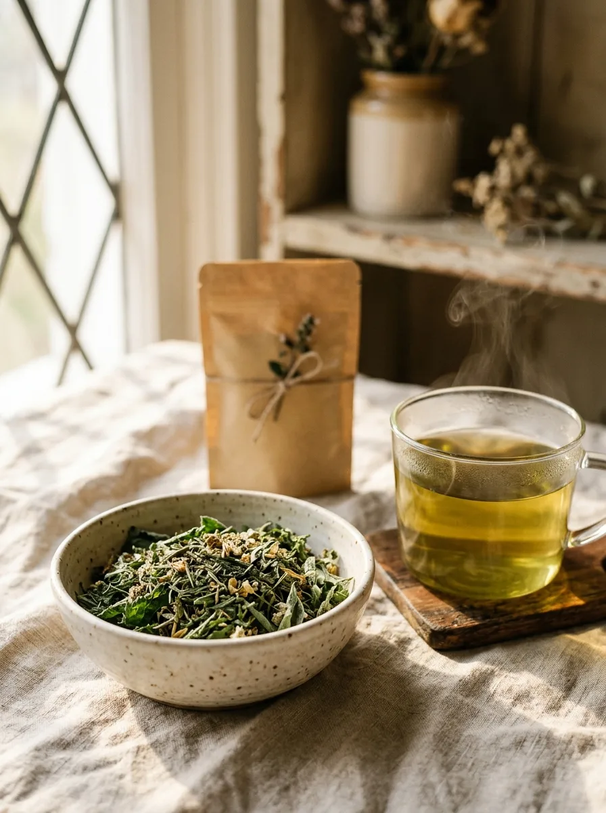
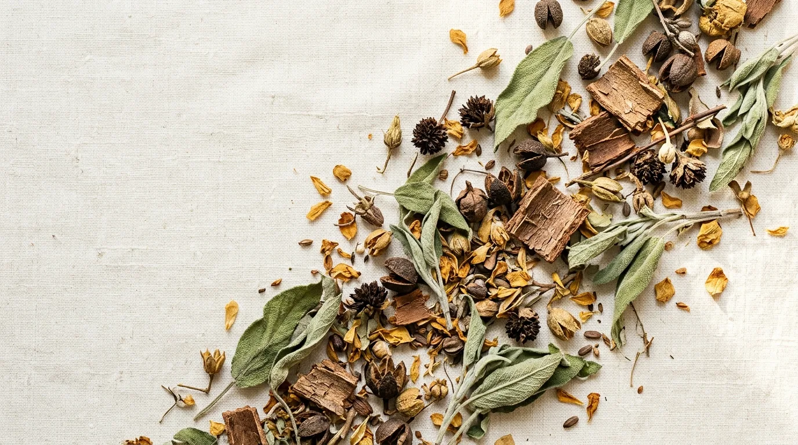
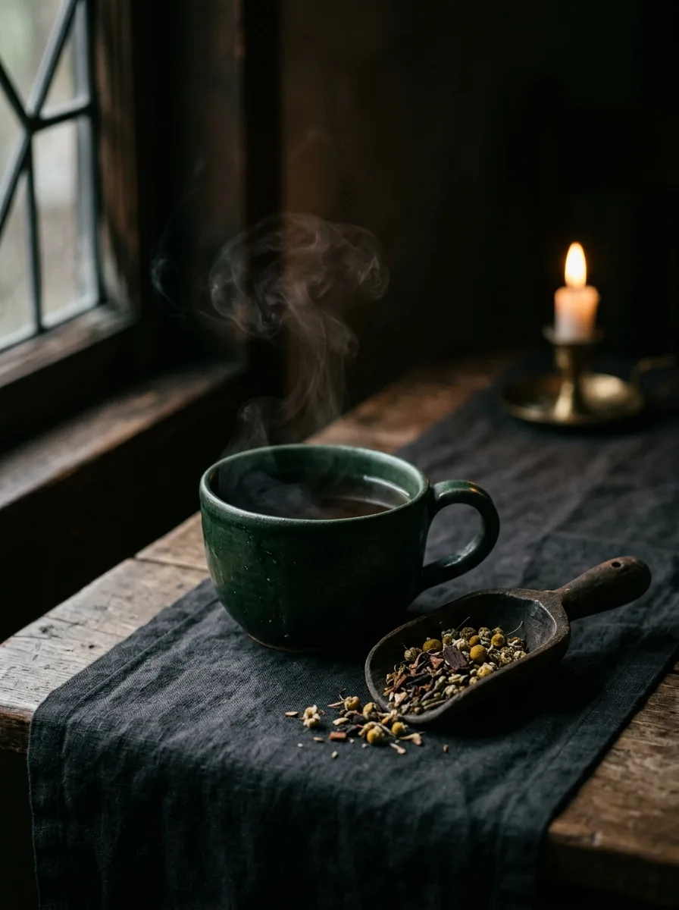

Before You Brew
How to Prepare Your Body.
The herbs are ready. But are you? How you live in your body decides how far these plants can go.

The Companion RitualThe Foundation
Before you begin any herbal protocol, start with the ground it grows in.
What you put in your body, and how you live in your body, determines how far these plants can go. This is the companion guide to your herbs: what to eat, what to avoid, how to hydrate, and how to support your nervous system, so your herbs can do what they were designed to do.

The Principle
Herbs are amplifiers.
The cleaner the foundation you give them, the deeper and faster they work. What you eat, how much you sleep, how you manage stress, and how well you hydrate all play a direct role in your results.
A cup of Cat's Claw in a body running on processed food, poor sleep, and chronic stress will not reach the same depth as that same cup in a body that has been intentionally prepared to receive it.
Prepare the Ground
Four ways to help your body receive.
None of this asks for perfection. It asks for intention. Give your herbs a body that is ready, and they will meet you halfway.
Feed the body real food.
Lean toward whole, anti-inflammatory foods that give your system less to fight and more to work with. The simpler your plate, the more room your herbs have to do their work.
- Lean toward
- Whole vegetables, fruit, and clean proteins as the base of most meals
- Naturally anti-inflammatory foods: leafy greens, ginger, turmeric, healthy fats
- Cooked, warm, easy-to-digest meals while you are on a protocol
- Ease off
- Avoid processed and packaged food that keeps the body inflamed
- Avoid refined sugar, it works against the herbs, especially hormonal and blood-sugar blends
- Avoid alcohol, which taxes the same systems your herbs are trying to restore

Water is the carrier.
Your herbs move through your body in water. A well-hydrated system carries their compounds further and clears what is being released more gently. Hydration is the quiet half of every protocol.
- Drink clean water steadily through the day, not all at once
- Begin the morning with water before caffeine or food
- Add more on days your protocol is working the detox and digestive systems
- Remember your warm brewed herbs count toward the ritual, always taken warm
Rest is where the work lands.
Sleep is when the body repairs and integrates. The same protocol reaches further in a rested body than in a depleted one, because rest is when your system finally has the space to respond.
- Protect a consistent sleep and wake rhythm while you are on your herbs
- Wind down away from screens and bright light before bed
- Keep evenings calm and unhurried so the body can settle
- Let the nighttime blends, taken warm, become part of your close-of-day ritual

Calm the system that holds it all.
Chronic stress keeps the body braced, and a braced body cannot fully receive. Softening your nervous system is not a luxury on a protocol, it is part of the protocol. This is where the deepest results are protected.
- Manage daily stress instead of letting it run in the background
- Use slow, intentional breathwork to bring the body out of its guard
- Move your body gently and often, walking, stretching, unrushed movement
- Make room for stillness, the way the communities these herbs come from always have
A Gentle Note
This is groundwork, not gatekeeping.
You do not have to arrive perfect. Prepare the body intentionally, live a little cleaner while your herbs are working, and you give these plants their best chance to reach their full depth. Always consult a qualified clinician about pregnancy, nursing, medications, allergies, or ongoing conditions before starting any herbal protocol.
Next in the Ritual
Body ready. Now brew.
You have prepared the ground. The next step is the cup itself, how to steep, simmer, store, and get the most from every pouch.
This page is a working draft of the body-preparation guide, built from the current Kawsaypac principles. It is ready to be finalized word for word once the dedicated Preparing Your Body copy is provided.